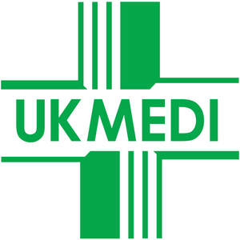

Trade Mark Journal No.2025/019 9 May 2025
UK00004185492 7 April 2025 (5,9,10,35,39,41,42,44)

- Class 5
- Infection control products namely, hand sanitisers, hard surface wipes, probe wipes, alcohol gels and rubs, sanitising foam, antiseptic hand washes, antibacterial skin cleaners; veterinary vaccines and preparations; veterinary pads, veterinary wound care, veterinary goods for blood infusion, flashing, gastroenterology products, holistic products, urogenital, soda lime, wound closing and drains; vaccine carriers; pregnancy testing preparations; surgical tape; pharmaceutical creams; medicated creams; antibiotic creams; hydrocortisone creams; spermicidal creams; face cream [medicated]; nappy cream [medicated]; topical analgesic creams; body creams [medicated]; pain relieving creams; foot cream [medicated]; night creams [medicated]; moisturising creams [pharmaceutical]; protective creams [medicated]; anti-itch creams; acne creams [pharmaceutical preparations]; creams for dermatological use; corn and callus creams; cold cream for medical use; hand creams for medical use; medicated creams for the lips; antifungal creams for medical use; multi-purpose medicated antibiotic creams; medicated cream for treating dermatological conditions; medicated creams for application after exposure to the sun; medicated body washes; medicated balms; multi-purpose medicated analgesic balms; alcohol-based antibacterial skin sanitiser gels; bunion sleeves; sanitizing wipes; cotton wool for surgical use; sterilized dressing; bandages; plasters.
- Class 9
- Software; downloadable software; mobile application software; website software; software relating to medical services; software relating to cosmetic services; software relating to patient records.
- Class 10
- Surgical and medical apparatus and instruments; stethoscopes; blood testing apparatus; blood pressure monitors and sphygmomanometers, doctor and health professional bags and cases for transportation of equipment; needles for medical purposes; syringes for medical purposes; pulse oximeters; first aid medical apparatus for sale in kit form; medical disposables, drug cabinets and trolleys, surgical trolleys, medical furniture namely, examination couches, trolleys, treatment chairs, drip and infusion stands, clinical bins manufactured especially for disposing of clinical waste for hospitals and clinics, portering equipment, namely evacuator chairs for patients, phlebotomy chairs and beds specifically made for medical purposes; medical couches; spirometry equipment; nebulisers; syringe drivers; audiometric apparatus; autoclaves; dermatoscopes; diagnostic sets; diagnostic instruments; dopplers (ultrasound transducers); scrubs suits; ECG monitoring apparatus; medical scissors; forceps; suture packs; probes; single use instruments, single use plastics for medical use; sutures; medical plastics namely, medicine measures, beakers for hospital and disabled use, gallipots, urinals, jugs, trys, polywear sets, commode and sanitary pans, vomit bowls; patient handling equipment; ophthalmoscopes; otoscopes; urinalysis equipment; veterinary diagnostic sets, veterinary otoscopes, veterinary dispensary goods such as veterinary plastic containers, veterinary pipettes, veterinary conical glass measures, veterinary medical boxes, veterinary cartons and bags, veterinary tablet crushers, veterinary bedding and kennel liners; veterinary stethoscopes, veterinary gloves and protective wear, veterinary collars and shirts, veterinary syringes and needles, anaesthesia equipment such as veterinary ET tubes, veterinary laryngoscopes, veterinary monitors, veterinary reservoir bags, veterinary surgical instruments, veterinary surgical equipment, veterinary hollowware, irrigation equipment, veterinary drapes, face masks and goods for wound closures; veterinary pumps and tubes; apparatus for monitoring vital signs; sensor apparatus for medical use in monitoring the vital signs of patients; sharps bin; sharps containers; urine testing instruments for medical diagnostic purposes; diagnostic apparatus for pregnancy testing; medical clothing; protective clothing for medical purposes; protective clothing for surgical purposes; scissors for surgery; resuscitation manikins; skin graft knife; scalpel; spatula [medical]; surgical forceps; foot wedge for orthopaedic use; body block for orthopaedic use; gel pads for orthopaedic use; domes for orthopaedic use; heel sleeves for orthopaedic use; gel straps for orthopaedic use; heel lifts for orthopaedic use; digital pads for orthopaedic use; orthopaedic toe separators; orthopaedic toe crest; digital strips for orthopaedic use; orthopaedic toe spreader; orthopaedic digital caps; forceps for medical use; orthopaedic footwear; orthopaedic inserts for footwear; stitch scissors; podiatry bur barrels; diamond deb foot dressers; tubular foam support for orthopaedic use; tubular padding support for orthopaedic use; burr stands; tube gauze support; retractable safety blade; toe inserts for footwear; toe regulators; toe relief pads; toe inserts for footwear [orthopaedic]; medical gallipot; Lighting for medical use; skeletons and skull for training purpose.
- Class 35
- Online wholesale and retail store services in relation to, infection control products namely, hand sanitisers, hard surface wipes, probe wipes, alcohol gels and rubs, sanitising foam, antiseptic hand washes, antibacterial skin cleaners, sanitising wipes, facial tissues and toilet tissues, and paper hand towels, veterinary vaccines and preparations, pharmaceutical creams, medicated creams, antibiotic creams, hydrocortisone creams, spermicidal creams, face cream [medicated], nappy cream [medicated], topical analgesic creams, body creams [medicated], pain relieving creams, foot cream [medicated], night creams [medicated], moisturising creams [pharmaceutical], protective creams [medicated], anti-itch creams, acne creams [pharmaceutical preparations], creams for dermatological use, corn and callus creams, cold cream for medical use, hand creams for medical use, medicated creams for the lips, antifungal creams for medical use, multi-purpose medicated antibiotic creams, medicated cream for treating dermatological conditions, medicated creams for application after exposure to the sun, medicated balms, medicated body washes, multi-purpose medicated analgesic balms, veterinary pads, veterinary wound care, veterinary goods for blood infusion, flashing, gastroenterology products, holistic products, urogenital, soda lime, wound closing and drains, vaccine carriers, pregnancy testing preparations, surgical tape, scissors for household use, medical scales, mouse mats, Surgical and medical apparatus and instruments, stethoscopes, blood testing apparatus, blood pressure monitors and sphygmomanometers, doctor and health professional bags and cases for transportation of equipment, needles for medical purposes, syringes for medical purposes, pulse oximeters, first aid medical apparatus for sale in kit form, medical disposables, drug cabinets and trolleys, surgical trolleys, medical furniture namely, examination couches, trolleys, treatment chairs, drip and infusion stands, clinical bins manufactured especially for disposing of clinical waste for hospitals and clinics, portering equipment, namely evacuator chairs for patients, phlebotomy chairs and beds specifically made for medical purposes, medical couches, spirometry equipment, nebulisers, syringe drivers, audiometric apparatus, autoclaves, dermatoscopes, diagnostic sets, diagnostic instruments, thermometers, dopplers, scrubs suits, ECG monitoring apparatus, medical scissors, forceps, suture packs, probes, single use instruments, single use plastics for medical use, sutures, medical plastics namely, medicine measures, beakers for hospital and disabled use, gallipots, urinals, jugs, trys, polywear sets, commode and sanitary pans, vomit bowls, patient handling equipment, sample collection devices, ophthalmoscopes, otoscopes, urinalysis equipment, veterinary diagnostic sets, veterinary otoscopes, veterinary dispensary goods such as veterinary plastic containers, veterinary pipettes, veterinary conical glass measures, veterinary medical boxes, veterinary cartons and bags, veterinary tablet crushers, veterinary bedding and kennel liners, veterinary stethoscopes, veterinary gloves and protective wear, veterinary collars and shirts, veterinary syringes and needles, anaesthesia equipment such as veterinary ET tubes, veterinary laryngoscopes, veterinary monitors, veterinary reservoir bags, veterinary surgical instruments, veterinary surgical equipment, veterinary hollowware, irrigation equipment, veterinary drapes, face masks and goods for wound closures, veterinary pumps and tubes, apparatus for monitoring vital signs, sensor apparatus for medical use in monitoring the vital signs of patients, sharps bin, sharps containers, urine testing instruments for medical diagnostic purposes, diagnostic apparatus for pregnancy testing, medical clothing, protective clothing for medical purposes, protective clothing for surgical purposes, scissors for surgery, lighting for medical use, resuscitation manikins, skeletons and skull for training purposes, instructional and teaching material (except apparatus), anatomical models for instructional and educational purposes.
- Class 39
- Storage/warehousing; storage of goods; delivery of goods; freight [shipping of goods]; packaging of goods.
- Class 41
- Education; entertainment; education relating to health and medical advice; entertainment; entertainment relating to health and medical advice; organisation of events; organisation of conferences and seminars; provision and organisation of classes relating to medical advice, health and wellness; training; training in the field of medicine; training in the field of medical services; training in the field of cosmetic services.
- Class 42
- Medical laboratory services; software as a service [SAAS]; platform as a service [PAAS]; electronic data storage; online data storage; provision of a website; software design; website design.
- Class 44
- Medical services; medical clinic services; medical consultation services; provision of advice relating to medical services; provision of advice relating to health and wellness; consultation services relating to medicine, health and wellness; aesthetician services; cosmetic and plastic surgery; cosmetic treatments.
GG & BB Limited